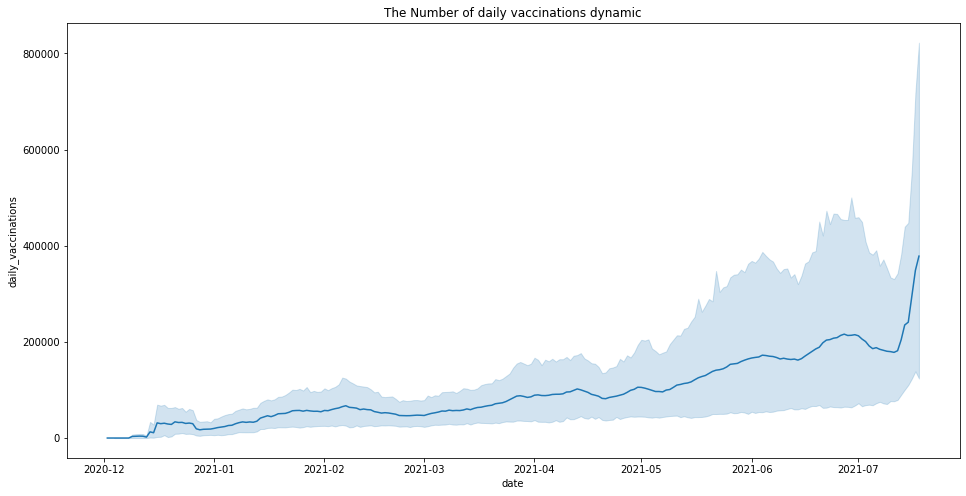
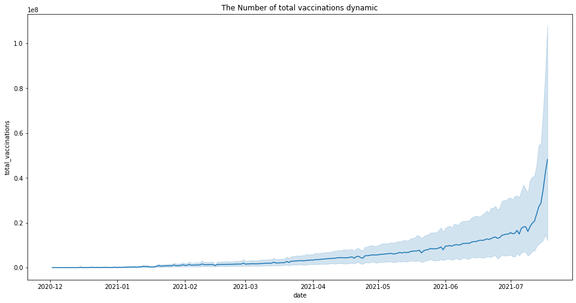
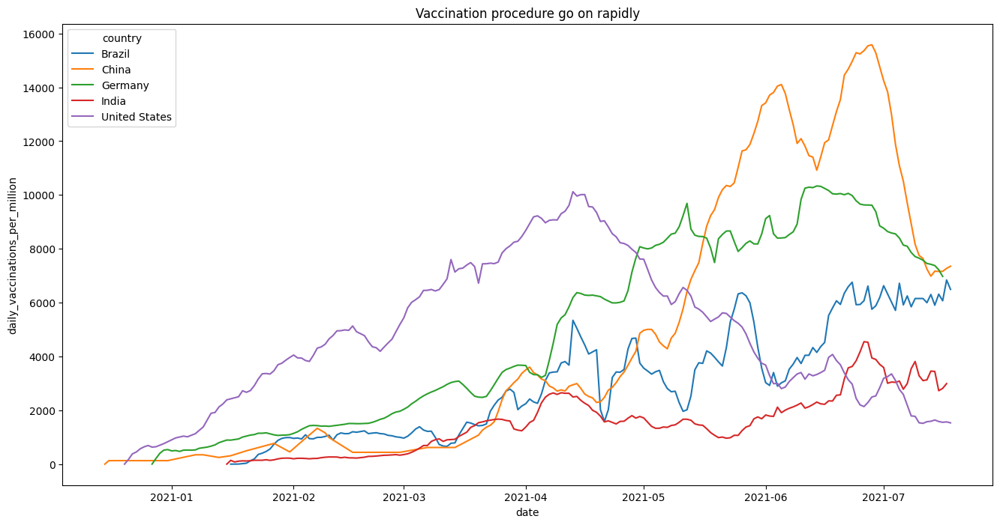
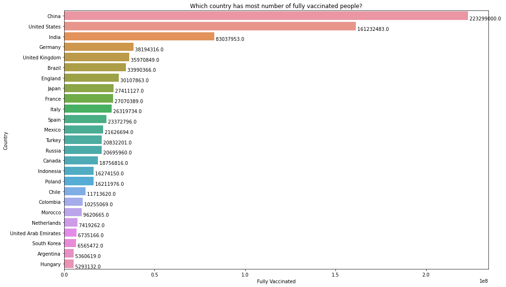
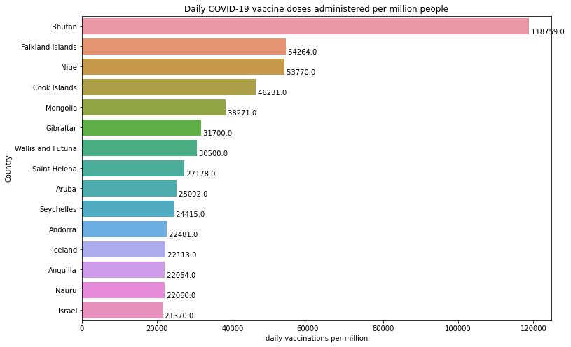
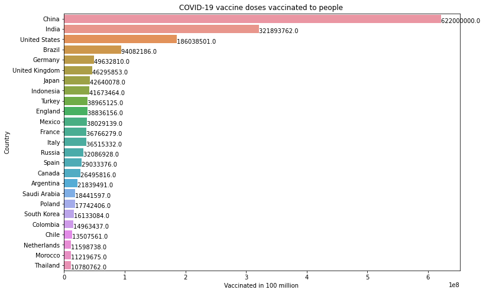
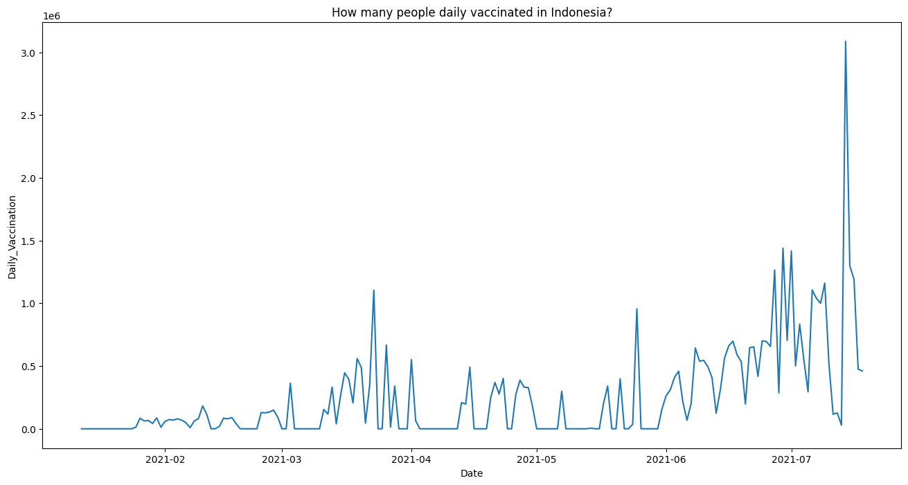

31K+
Data Records
15
Variables
200+
Countries
Python
Main Technology
Project Overview
This project analyzes global COVID-19 vaccination data to explore vaccination trends, compare vaccination progress across countries, and identify countries with the highest vaccination achievements.
The analysis follows a complete exploratory data analysis workflow, starting from understanding the dataset structure and handling missing values to creating visualizations and extracting meaningful insights.
Dataset Overview
The dataset contains global COVID-19 vaccination records, including information about total vaccinations, people vaccinated, fully vaccinated populations, daily vaccination rates, vaccine types, and data sources.
| Column | Description |
|---|---|
| country | Country name |
| iso_code | Country ISO code |
| date | Vaccination record date |
| total_vaccinations | Total number of vaccinations |
| people_vaccinated | Number of people who received at least one vaccine dose |
| people_fully_vaccinated | Number of fully vaccinated people |
| daily_vaccinations | Daily vaccination doses |
| vaccines | Vaccines used in each country |
| source_name | Data source |
Initial Data Exploration
The dataset was initially explored to understand its structure, dimensions, statistical summary, and missing values.
- Used info() to inspect column names and data types.
- Used shape to identify the number of rows and columns.
- Used describe() to obtain descriptive statistics.
- Checked missing values using isnull().sum().
- Identified the minimum and maximum dates available in the dataset.
- Explored the number of unique countries represented in the dataset.
Data Cleaning & Preparation
The dataset contained missing values in several vaccination-related columns. Missing values were handled by replacing them with zero values to prepare the data for further analysis.
The date column was also processed to extract additional temporal features. The original date variable was separated into individual day, month, and year columns.
Data Exploration
Understanding dataset structure and characteristics.
Missing Values
Identifying and handling missing data.
Date Processing
Extracting day, month, and year information.
Data Analysis
Exploring trends and vaccination patterns.
Exploratory Data Analysis
Several exploratory analyses were conducted to understand global vaccination patterns and compare vaccination progress between countries.

Daily Vaccination Trends
A line plot was used to explore the dynamics of daily vaccinations over time.

Total Vaccination Trends
The cumulative number of vaccinations was explored to understand the overall vaccination progress over time.

Top 5 Countries by Total Vaccinations
The top five countries with the highest total vaccination counts were identified and their vaccination progress was compared over time.

Fully Vaccinated Population
Countries were compared based on the total number of fully vaccinated people.

Daily Vaccination Doses per Million
This analysis compares daily COVID-19 vaccine doses administered per million people across countries.

Top 25 Countries by Vaccination Coverage
The top 25 countries with the highest vaccination coverage were explored and compared.
Indonesia Vaccination Analysis
A focused analysis was conducted to understand the vaccination progress in Indonesia.
Daily Vaccination
Analysis of daily vaccination trends in Indonesia.
At Least One Dose
57.95 million people received at least one dose of the COVID-19 vaccine in Indonesia.
Fully Vaccinated
16.27 million people were fully vaccinated in Indonesia.

Key Questions Explored
- Which country has the highest number of fully vaccinated people?
- Which countries administered the highest number of daily vaccine doses per million?
- How many people were vaccinated daily in Indonesia?
- How many people received at least one vaccine dose in Indonesia?
- How many people were fully vaccinated in Indonesia?
- Which country fully vaccinated the largest proportion of its population?
- Which are the top 25 countries with the highest vaccination coverage?
- In which month did the maximum vaccination activity occur?
Key Insights
The following insights were obtained from the exploratory analysis:
Global Vaccination Trends
[Add your key finding about global daily and total vaccination trends.]
Leading Countries
[Add the country or countries that achieved the highest vaccination results.]
Indonesia Vaccination Progress
[Add your findings from the Indonesia vaccination analysis.]
Monthly Vaccination Activity
[Add the month with the highest vaccination activity and your analysis.]